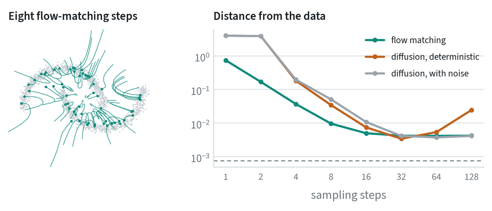

Two ways to generate
A generative model learns a data distribution so that it can produce new samples from it. There are two main families.
| Autoregressive | Diffusion and flow matching | |
|---|---|---|
| How it generates | One piece at a time: predict the next token, append it, repeat | All at once: start from noise and refine the whole sample over several steps |
| Training loss | Cross entropy on the next token | Regression: predict the noise, or the direction toward clean data |
| Strengths | Simple, handles variable length | Sharp continuous outputs; represents several valid answers |
| Limits | One step per token; continuous values must be binned first | Needs several refinement steps per sample |
| Used for | Language, reasoning, tokenised actions | Images, video, robot action chunks |
Both appear in robotics. Action tokens are generated one at a time. Continuous action chunks are generated by diffusion or flow matching.
Diffusion and flow matching, step by step
Training destroys data with noise, and the model learns to undo it. The model never learns to draw a whole sample in one go. It learns one small denoising step, which is then applied repeatedly.

Training. Take a real sample, pick a random noise level, mix the two, and ask the network to predict the noise, or the velocity that points from noise toward data. Sampling. Start from pure noise and step along the predicted direction. Conditioning. Feed the network text, images or robot state, and the same noise becomes a sample that fits the condition.
Diffusion wanders because fresh noise is injected at every step. Flow matching moves in nearly straight lines, so it needs far fewer steps. That difference is why recent robot policies favour it.
The two objectives, written out
Both are plain regression losses. What differs is the path between noise and data.


Flow matching keeps diffusion’s regression trick and removes the noise schedule, which is one fewer thing to tune.
The mathematics in one place
Every generative model in use is fitted to maximise, or to bound, the probability of the data. The families differ in how they make that tractable.
Autoregressive
The likelihood is exact, training is one parallel pass, and sampling takes one model call per token.
Diffusion
A fixed forward process adds Gaussian noise over steps. Its useful property is that any step can be reached directly from the data:
where falls from 1 to nearly 0 as grows. The network is trained to recover the noise that was added:
This simple loss is a re-weighted form of a bound on the log-likelihood. Predicting the noise is also equivalent, up to scale, to predicting the score, the gradient of the log-density of the noisy data: . Sampling follows that gradient from noise toward data.
Flow matching
Define a straight path between a noise sample and a data sample , and train a network to output the velocity along it:
Sampling integrates the ordinary differential equation from to , in the simplest case with Euler steps: . The learned velocity is an average over all the straight paths that pass through a point, so the trajectories that result curve a little, and the straighter they are the fewer steps are needed.
Variational autoencoders
The first term rewards reconstruction and the second keeps the codes close to a simple prior. In the autoencoders used for latent diffusion the second term is given a very small weight, so they behave as compressors with a smooth latent space.
Flow matching against diffusion, measured


The two models have the same architecture and saw the same data for the same number of steps. With 32 or more sampling steps they are equally good. With few, they are not: at four steps flow matching is five times closer to the data than diffusion, and at one or two steps diffusion produces nothing usable. The paths on the left show why. They are nearly straight, so a few large steps follow them well.
The deterministic diffusion sampler also gets worse again beyond 32 steps here, a reminder that a sampler is a numerical method with its own errors, and that more steps are not automatically better.
Latent spaces: generate in a compressed world

Pixels are expensive. A short 480p video clip is tens of millions of numbers. An autoencoder compresses it, often by eight times in each spatial direction and four times in time, and the generator works on that small grid. This is what makes video generation affordable.
The price is a quality ceiling set by the autoencoder. If it cannot reconstruct small objects, thin structures or fast motion, the generator cannot produce them. Robot grippers and contact points are exactly that kind of detail, so reconstruct real data first and look at it.
Autoencoders and tokenisers
The latent space above has to come from somewhere. It comes from an autoencoder: an encoder that squeezes the input into a small code and a decoder that rebuilds the input from it, trained together so the rebuilt input matches the original.

- Continuous latents. A variational autoencoder, or VAE, also keeps its codes smooth and well spread, so that a point between two codes still decodes to something sensible. Diffusion and flow models generate in this space.
- Discrete tokens. A vector-quantised autoencoder snaps each code to the nearest entry in a learned codebook and keeps only the entry’s number. An image becomes a short list of integers, which a language-model-style generator can predict one at a time.
The same idea is applied to robot actions. A chunk of actions is compressed into a few tokens, which is how a language model can output smooth motion without one token per number.
Making sampling controllable and fast
- Guidance. Run the model with and without the condition and exaggerate the difference. Samples follow the prompt more closely, at the cost of variety.
- Few-step sampling. Each step is a full pass through the network. Flow matching and better solvers cut fifty steps to under ten. Robot action heads commonly use four to ten.
- Distillation. Train a student to match many teacher steps in one, trading a little quality for a large speed-up.
Few-step sampling is what lets these models run inside a robot’s control loop. An action generator that needs fifty passes cannot run at 10 Hz. One that needs four can.
Video: all at once, or frame by frame
Video adds a choice that images do not have. A model can denoise a whole clip together, which keeps it consistent from start to end and fixes its length. Or it can generate one frame, or a few, at a time, each conditioned on the ones before. That allows any length and lets new input arrive mid-stream, at the cost of errors building up.
Recent models combine the two by giving each frame its own noise level: frames already produced are clean, and frames still to come are noisy. This matters for robots, because a world model has to keep generating as new actions and observations arrive.
Scoring generated samples
Generated images and video have no single right answer to compare against, so the standard metrics compare populations. FID for images and FVD for video pass many real and many generated samples through a pretrained network and measure how far apart the two sets of features are. Lower is better.
These scores need thousands of samples to be stable, and they measure realism, not correctness. A video can score well and ignore the action it was conditioned on. Use them to track progress, and look at the samples.
Common mistakes
- Judging a generator without checking its autoencoder. Blurry hands or grippers are often a reconstruction limit, not a generation failure.
- Turning guidance up. Past a point, outputs become saturated and unnatural.
- Counting steps as free. Every extra step is latency.
Terms
- Latent
- A compressed representation that a generator works in.
- Denoising step
- One refinement of a noisy sample toward clean data.
- Guidance
- A knob that trades variety for closeness to the condition.
- VAE
- An autoencoder that maps data to a smooth latent space and back.
- Autoencoder
- An encoder and decoder trained to compress an input and rebuild it.
- Codebook
- A learned list of vectors; a discrete token is the number of the nearest one.
- Score
- The gradient of the log-density of the data; the direction in which samples become more probable.
- ODE sampler
- A sampler that follows a deterministic differential equation from noise to data.
- ELBO
- A lower bound on the log-likelihood that can be optimised when the likelihood itself cannot.
In my work
Further reading
- Ho et al., 2020. Denoising Diffusion Probabilistic Models.
- Lipman et al., 2022. Flow Matching for Generative Modeling.
- Rombach et al., 2021. High-Resolution Image Synthesis with Latent Diffusion Models.
- Ho and Salimans, 2022. Classifier-Free Diffusion Guidance.
- Kingma and Welling, 2013. Auto-Encoding Variational Bayes.
- van den Oord et al., 2017. Neural Discrete Representation Learning (VQ-VAE).
- Chen et al., 2024. Diffusion Forcing: Next-token Prediction Meets Full-Sequence Diffusion.
- Song et al., 2020. Score-Based Generative Modeling through Stochastic Differential Equations.
- Liu et al., 2022. Flow Straight and Fast: Learning to Generate and Transfer Data with Rectified Flow.